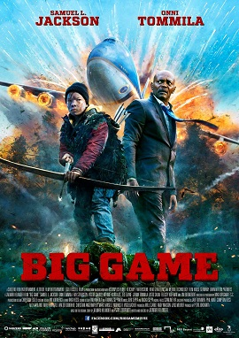
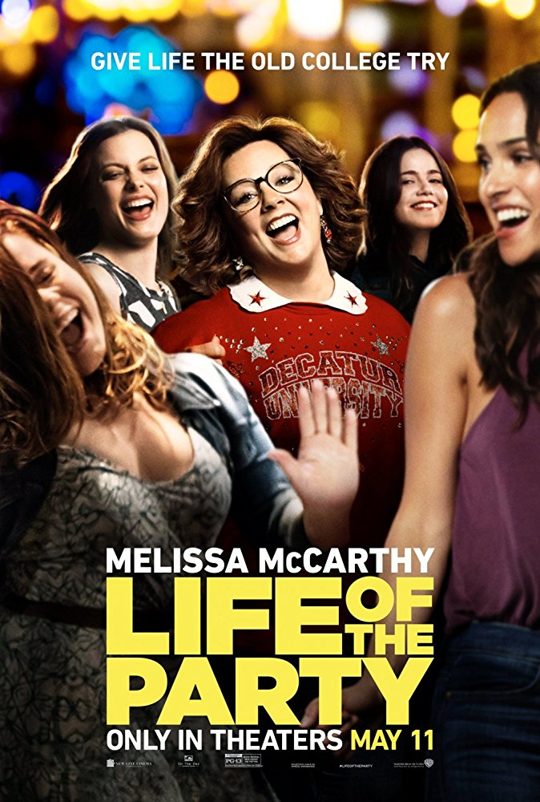
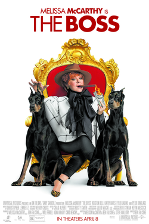

- Name: Mission impossible
- Year: 2018
- Genre: Action, Thriler
Storyline
Two years after Ethan Hunt had successfully captured Solomon Lane,
the remnants of the Syndicate have reformed into another organization called the Apostles.
Under the leadership of a mysterious fundamentalist known only as John Lark,
the organization is planning on acquiring three plutonium cores.
Ethan and his team are sent to Berlin to intercept them,
but the mission fails when Ethan saves Luther and the Apostles escape with the plutonium.
With CIA agent August Walker joining the team,
Ethan and his allies must now find the plutonium cores before it's too late.

- Name: Big Game
- Year: 2014
- Genre: Thriler
Big Game is a 2014 Finnish action adventure film directed by Jalmari Helander,
based on the original story by Helander and Petri Jokiranta.
The film stars Samuel L. Jackson, Onni Tommila, Felicity Huffman, Victor Garber, Ted Levine,
Jim Broadbent, and Ray Stevenson.Premiering at the 2014 Toronto International Film Festival,
the film was generally well received, with IGN citing it to be "a throwback to ’80s and ’90s adventure movie
with a dash of comic book violence thrown in for good measure.

- Name: Life of the party
- Year: 2018
- Genre:Comedy
A woman struggling with insecurity wakes from a fall believing
she is the most beautiful and capable woman on the planet.
Her new confidence empowers her to live fearlessly,
but what happens when she realizes her appearance never changed?

- Name: The Boss
- Year: 2016
- Genre: Comedy
The Boss is a 2016 American comedy film directed by Ben Falcone and
written by Falcone, Melissa McCarthy and Steve Mallory.
The film stars McCarthy, Kristen Bell, Ella Anderson, Tyler Labine,
Kathy Bates, Annie Mumolo, Timothy Simons, and Peter Dinklage. The film follows a wealthy woman who,
after being arrested and losing her fortune, uses her assistant's
daughter's Dandelion Girls cookie sales to return to the top. The film was released on April 8, 2016, by Universal Pictures,
received generally negative reviews from critics and grossed $78 million worldwide.